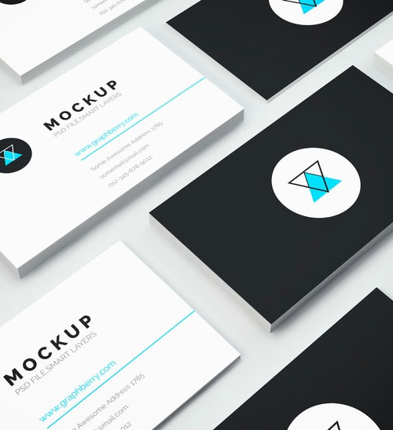
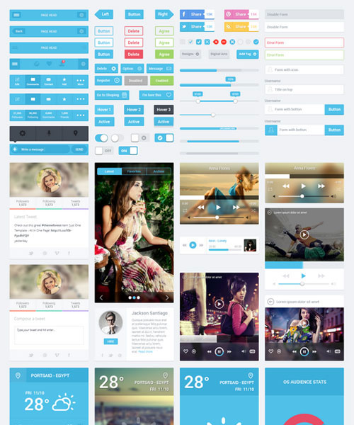

01 — Platform engineering2019 — now
Football platform
Referee registration and account management built as a scalable, event-driven platform.
Senior Full Stack .NET Developer · Noida, India
I design resilient enterprise products with .NET, Angular and Azure — turning complex business problems into clear, scalable software.
01 / Selected work
A few chapters from a decade of building applications, integrations and platforms that people depend on.
Referee registration and account management built as a scalable, event-driven platform.

REST APIs and scheduled Azure jobs powering reliable smart-bike operations.

Controllers, stored procedures and quality practices for a distributed learning platform.
02 / What I bring
Clean, dependable services with C#, .NET Core, REST and SQL Server.
Event-driven workflows with Functions, Service Bus, Batch Jobs and microservices.
Angular architecture and UI delivery with a focus on quality and clarity.
Architecture decisions, story refinement, reviews and mentoring that move teams forward.
03 / Experience
Cognizant Technology Solutions · Noida
Designing .NET Core microservices and asynchronous Azure integrations for a football platform. Leading Angular delivery, shaping architecture and mentoring associate developers.
Cognizant Technology Solutions · Hyderabad
Built REST APIs and automated business processes with Azure Batch Jobs for the CCI Smart Bikes platform.
Cognizant Technology Solutions
Delivered enhancements, automation and production support for Cigna distributed applications.
Cognizant Technology Solutions · Chennai
Started the journey building controllers, stored procedures and tests for a learning management system.
04 / A little more
My work sits at the intersection of product thinking and engineering discipline. I enjoy making complex systems understandable — for the people who use them, and for the teams who maintain them.
05 / Start a conversation